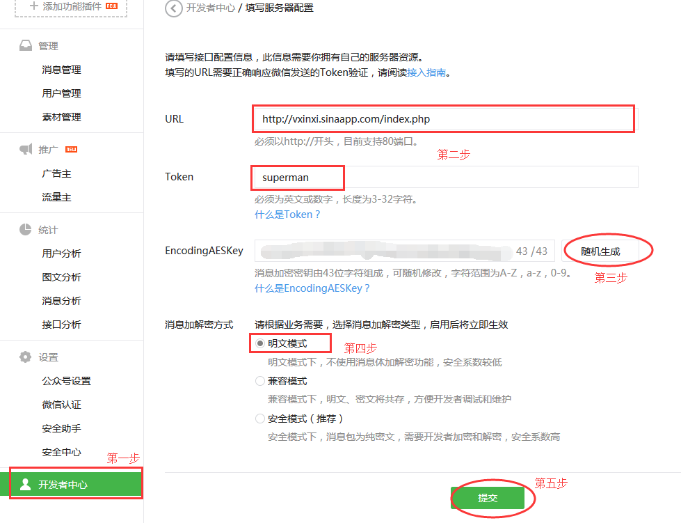

代码介绍：
应用程序核心PHP代码如下:
define("TOKEN", "superman");
$wechatObj = new wechatCallbackapiTest();
if (!isset($_GET['echostr'])) {
$wechatObj->responseMsg();
}else{
$wechatObj->valid();
}
class wechatCallbackapiTest
{
//验证签名
public function valid()
{
$echoStr = $_GET["echostr"];
$signature = $_GET["signature"];
$timestamp = $_GET["timestamp"];
$nonce = $_GET["nonce"];
$token = TOKEN;
$tmpArr = array($token, $timestamp, $nonce);
sort($tmpArr);
$tmpStr = implode($tmpArr);
$tmpStr = sha1($tmpStr);
if($tmpStr == $signature){
echo $echoStr;
exit;
}
}
//响应消息
public function responseMsg()
{
$postStr = $GLOBALS["HTTP_RAW_POST_DATA"];
if (!empty($postStr)){
$this->logger("R ".$postStr);
$postObj = simplexml_load_string($postStr, 'SimpleXMLElement', LIBXML_NOCDATA);
$RX_TYPE = trim($postObj->MsgType);
//消息类型
switch ($RX_TYPE)
{
case "event":
$result = $this->receiveEvent($postObj);
break;
case "text":
$result = $this->receiveText($postObj);
break;
case "image":
$result = $this->receiveImage($postObj);
break;
case "location":
$result = $this->receiveLocation($postObj);
break;
case "voice":
$result = $this->receiveVoice($postObj);
break;
case "video":
$result = $this->receiveVideo($postObj);
break;
case "link":
$result = $this->receiveLink($postObj);
break;
default:
$result = "unknown msg type: ".$RX_TYPE;
break;
}
$this->logger("T ".$result);
echo $result;
}else {
echo "";
exit;
}
}
修改代码中define("TOKEN", "superman"); 改为您喜欢的Token名.在微信开发者中心配置的时候需要用到.
配置介绍：

功能介绍：
可以识别多种关键字,可以查询城市天气,许多功能用户可以自己探索.
输入 help 的提示信息如下：
发送 城市名天气 获取城市天气,
如：发送 北京天气 获取城市北京的天气.
发送 help 可以获得帮助.
发送 img 可看到网站预览图.
发送 news 可看图片新闻.
发送 music 可听音乐.
当然也可以发送其他关键字来查看是否能获得您想要的信息.
您还可以给我发语音,位置,图片等.
效果截图：


关于这段小程序
利用业余时间,自己学习PHP,参考官方文档,参考网上代码自己制作的.